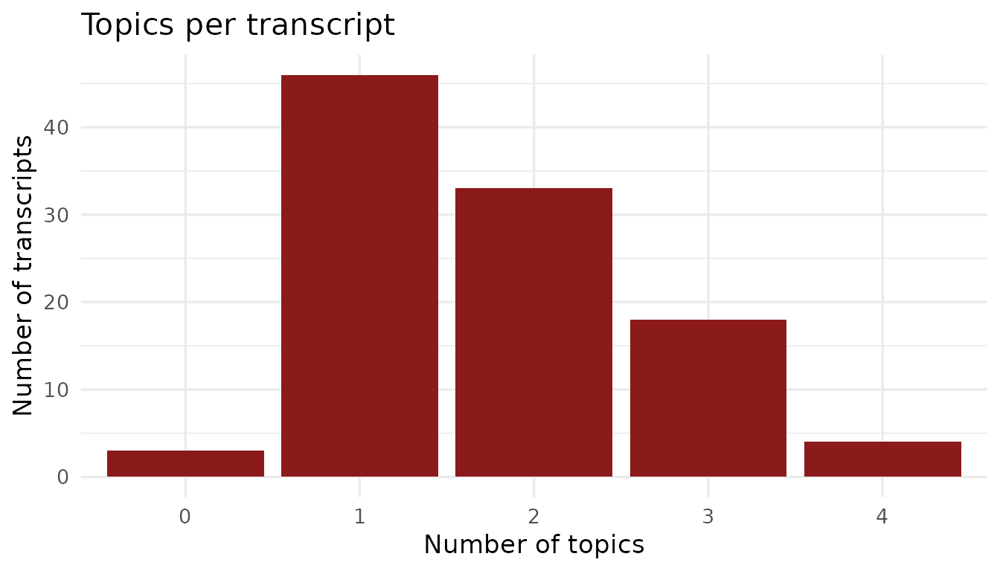

Overview
This article documents the actors and topics metadata bundled with BribeR. Understanding who is in the corpus and what they were discussing is essential for filtering, subsetting, and interpreting the transcripts.
Actors
The actors dataset contains biographical and
institutional metadata for 125 individuals named in the Vladivideos
transcripts. Each person is classified by their institutional role at
the time of the recordings.
library(BribeR)
library(dplyr)
library(ggplot2)
head(actors[, c("speaker", "Position", "Type", "Party", "speaker_std")])
#> # A tibble: 6 × 5
#> speaker Position Type Party speaker_std
#> <chr> <chr> <chr> <chr> <chr>
#> 1 Vladimir Montesinos Alberto Fujimori's Ch… Secu… NA MONTESINOS
#> 2 Desconocido NA NA NA DESCONOCIDO
#> 3 Alexander Martin Kouri Bumachar Elected Constituent C… Cong… Part… ALEX KOURI
#> 4 Lucchetti Company specialized i… Busi… NA LUCCHETTI
#> 5 Carlos Eduardo Ferrero Costa Congressman (1995-200… Cong… Camb… FERRERO
#> 6 Alberto Fujimori President of Peru (19… Elec… NA FUJIMORIInstitutional Types
Actors are grouped into nine institutional categories:
| Type | Count | Description |
|---|---|---|
Security |
31 | Military officers and police commanders |
Congress |
25 | Members of Congress, including opposition members bribed to switch allegiance |
Judiciary |
18 | Judges, prosecutors, and members of the electoral tribunal |
Media |
14 | Television channel owners and newspaper directors |
Businessperson |
12 | Private sector executives and financiers |
Elected Official |
9 | Mayors, regional presidents, and other elected officials |
Bureaucrat |
8 | Senior civil servants and agency heads |
Illicit |
5 | Individuals primarily associated with organized crime |
Foreign |
3 | Foreign officials and diplomats |
actors |>
count(Type, sort = TRUE) |>
ggplot(aes(x = reorder(Type, n), y = n)) +
geom_col(fill = "#8B1A1A") +
coord_flip() +
labs(
title = "Actors by institutional type",
x = NULL,
y = "Number of actors"
) +
theme_minimal(base_size = 13)
Finding Transcripts by Actor Type
You can combine the actors dataset with
get_transcript_id() to filter the corpus by institutional
type:
media_actors <- actors |>
filter(Type == "Media") |>
pull(speaker_std) |>
tolower()
index_speakers <- gsub("^speaker_", "",
grep("^speaker_", names(transcript_index), value = TRUE))
media_actors <- media_actors[media_actors %in% index_speakers]
media_ids <- get_transcript_id(speaker = media_actors)
length(media_ids)
#> [1] 29Actor Descriptions
Short biographies are available for 79 actors in the
actors_description dataset, keyed by
speaker_std:
actors_description |>
filter(speaker_std == "MONTESINOS")
#> # A tibble: 1 × 2
#> speaker_std description
#> <chr> <chr>
#> 1 MONTESINOS Fujimori's Chief of StaffTo view descriptions for all speakers in a given transcript:
transcripts <- read_transcripts(transcripts = 1)
transcripts |>
distinct(speaker_std) |>
left_join(actors_description, by = "speaker_std")
#> # A tibble: 5 × 2
#> speaker_std description
#> <chr> <chr>
#> 1 BACKGROUND NA
#> 2 ALVA NA
#> 3 LEWIS NA
#> 4 BURNET NA
#> 5 GARCIA NATopics
Each transcript is tagged with one or more of 15 thematic topics. Topics reflect the main areas of Montesinos’s corrupt activity captured in the recordings.
topic_descriptions
#> # A tibble: 15 × 2
#> topics descriptions
#> <chr> <chr>
#> 1 topic_referendum Referendum to Preuvian consitution that was supporte…
#> 2 topic_ecuador Ensuring end to Peru-Ecuador war, while maintaining …
#> 3 topic_reelection Extended discussions involving ensured reelection of…
#> 4 topic_media Key transcripts highlighting control that Montesinos…
#> 5 topic_foreign Conversations regarding Peru’s relations with foreig…
#> 6 topic_safety Discussions on internal armed conflict, drug traffic…
#> 7 topic_lucchetti_factory Legal battle over whether Lucchetti Pasta could lega…
#> 8 topic_municipal98 Discussions involving Alex Kouri, Alberto Andrade an…
#> 9 topic_miraflores Discussions about the elections for mayor in Lima an…
#> 10 topic_canal4 Key transcripts highlighting control that Montesinos…
#> 11 topic_promotions Promotions being granted to different members of the…
#> 12 topic_ivcher Conversations regarding Ivcher providing information…
#> 13 topic_wiese Conversations Montesinos had with members of Wiese B…
#> 14 topic_public_officials Conversations in which Montesinos reassigns, plans, …
#> 15 topic_state_capture Discussions about capturing Congress, military bodie…Topic Reference
| Topic tag | Theme |
|---|---|
state_capture |
Systematic co-optation of state institutions across multiple sectors |
reelection |
Planning and executing Fujimori’s contested 2000 reelection |
media |
Payments to television channels and newspapers for favorable coverage |
promotions |
Military and police promotions granted in exchange for political loyalty |
safety |
Internal security operations against the political opposition |
foreign |
Foreign policy, international relations, and the 1995 Ecuador border conflict |
ivcher |
The case of Baruch Ivcher, a media owner stripped of Peruvian citizenship |
canal4 |
Dealings with Canal 4 (RBC Televisión) and its ownership |
wiese |
Interactions involving the Wiese banking group |
lucchetti_factory |
The Lucchetti pasta factory zoning controversy in Lima |
referendum |
The 1993 constitutional referendum supporting Fujimori’s agenda |
municipal98 |
Lima’s 1998 municipal elections and political manipulation |
miraflores |
Dealings involving the Miraflores district municipality |
public_officials |
Interactions with civil servants and administrative officials |
ecuador |
Diplomatic and military dimensions of the Peru–Ecuador border conflict |
Finding Transcripts by Topic
state_capture_ids <- get_transcript_id(topic = "state_capture")
length(state_capture_ids)
#> [1] 19
media_reelection_ids <- get_transcript_id(topic = c("media", "reelection"))
length(media_reelection_ids)
#> [1] 56
montesinos_media <- get_transcript_id(
speaker = "montesinos",
topic = "media"
)
length(montesinos_media)
#> [1] 92Topic Co-occurrence
Many transcripts cover multiple topics simultaneously — a single
meeting might involve media payments, electoral fraud, and legislative
manipulation at once. You can explore this using
read_transcript_meta_data():
meta <- read_transcript_meta_data()
meta |>
mutate(n_topics = lengths(topics)) |>
count(n_topics, sort = TRUE)
#> # A tibble: 5 × 2
#> n_topics n
#> <int> <int>
#> 1 1 46
#> 2 2 33
#> 3 3 18
#> 4 4 4
#> 5 0 3
meta |>
mutate(n_topics = lengths(topics)) |>
count(n_topics) |>
ggplot(aes(x = factor(n_topics), y = n)) +
geom_col(fill = "#8B1A1A") +
labs(
title = "Topics per transcript",
x = "Number of topics",
y = "Number of transcripts"
) +
theme_minimal(base_size = 13)
Using speaker_std as a Linking Key
The speaker_std column is the consistent identifier
linking actors across all datasets. It uses uppercase surnames and
resolves naming variation in the original source material. When writing
analysis code, always use speaker_std rather than the raw
speaker column for joins and filters.
transcripts |>
filter(speaker_std == "MONTESINOS") |>
summarise(n_turns = n(), n_words = sum(nchar(speech)))
#> # A tibble: 1 × 2
#> n_turns n_words
#> <int> <int>
#> 1 0 0get_transcript_id() expects lowercase values for the
speaker argument, which it matches against lowercase
speaker_std values internally:
get_transcript_id(speaker = "montesinos")
#> [1] 5 6 7 8 9 10 11 12 13 14 15 16 17 19 20 21 22 23 24
#> [20] 25 26 27 28 29 30 31 32 33 34 35 36 37 38 39 40 41 44 45
#> [39] 46 47 48 49 50 51 52 56 57 58 59 60 61 62 63 64 65 66 67
#> [58] 68 69 70 71 72 73 74 75 76 77 78 79 80 81 82 83 84 85 86
#> [77] 87 88 89 90 94 95 96 97 98 102 103 104